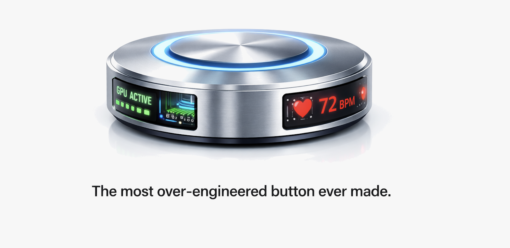
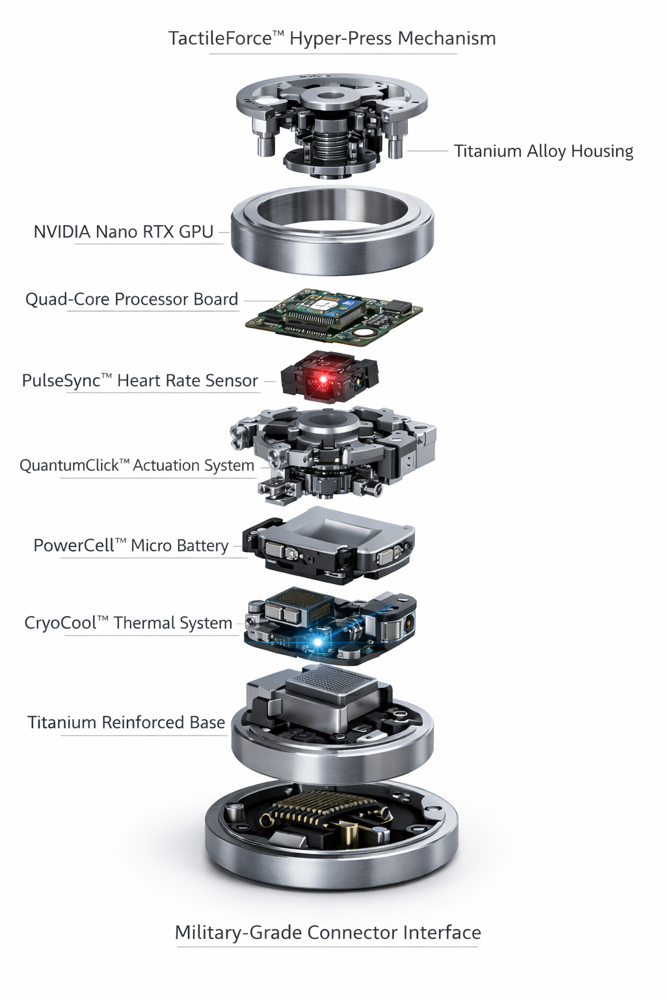
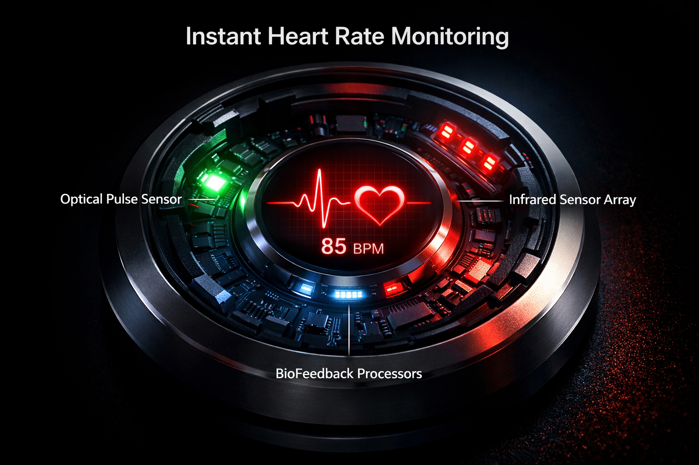
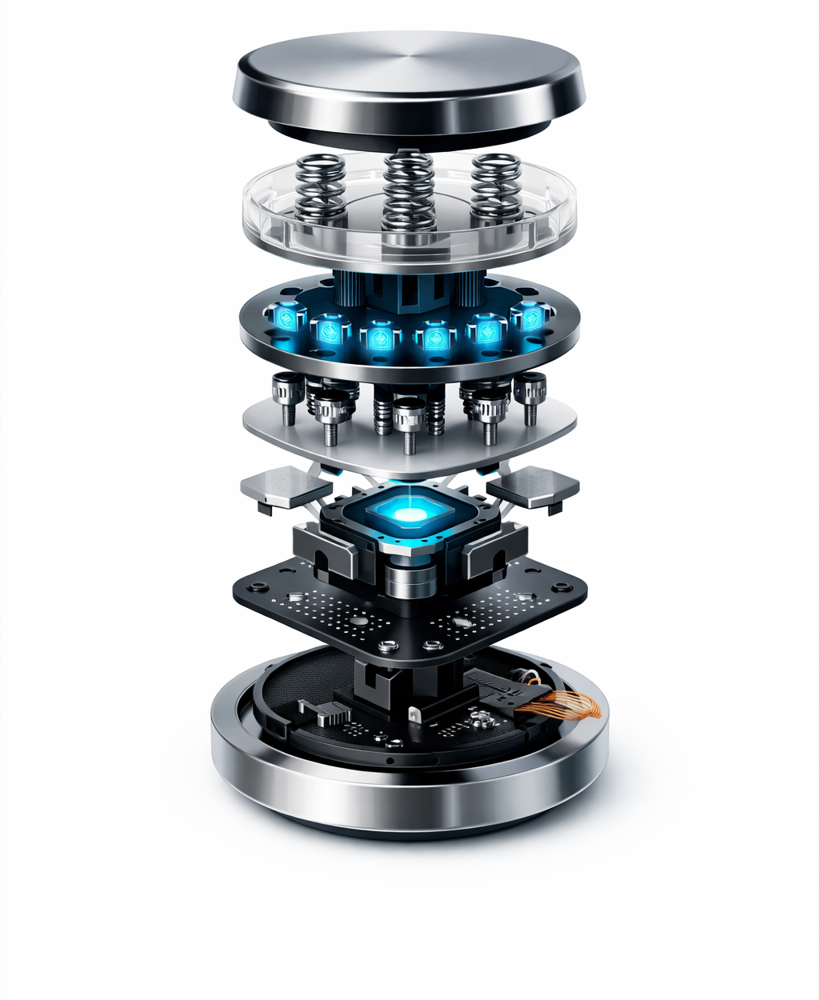

At long last, the humble button has been elevated to its final form. Crafted from military‑grade alloys and infused with cutting‑edge technology usually reserved for supercomputers and space probes, The Button™ is a triumph of engineering excess. It does everything a button can — and everything it absolutely does not need to.
Beneath its machined titanium cap lies a labyrinth of components so elaborate they should require a license to operate. Our patented TactileForce™ Hyper‑Press Mechanism ensures each press is met with perfectly weighted feedback derived from a thousand lab‑tested simulations. A bespoke QuantumClick™ Actuator Array translates your intention into 1.5 teraflops of click processing power, harnessing quantum‑entanglement algorithms to anticipate a press before it even happens.
Every layer serves a purpose — even if that purpose is to reassure you that you own a button with more parts than a commercial airliner.
Forget microcontrollers; The Button™ houses a dedicated GPU comparable to those found in professional workstations. This Nano RTX™ GPU is liquid cooled using our CryoCool™ Thermal System, maintaining peak performance while handling real‑time click simulation, advanced shading for the LED ring, and ray‑traced reflections for your viewing pleasure. Benchmark after benchmark proves our button can render a click in 8K at 240 FPS — because nothing less would do.
Powering this silicon marvel is a custom Quad‑Core Processor Board that orchestrates every subsystem with military precision. We could have stopped at just one compute core, but where's the fun in that?
For developers, the onboard GPU opens up endless possibilities: simulate button presses across a distributed neural network; render photorealistic click animations; or mine blockchains between user interactions. The GPU is yours to harness — assuming you read all 12,000 pages of our SDK documentation.
Because why not? Our PulseScan™ Sensor Array continuously monitors your biometric signals with medical‑grade precision as you interact with the Button™. By pressing the Button™, you consent to having your heart rhythm analysed by our proprietary neural network, which uses deep‑learning algorithms to compare your vitals against a database of elite athletes. Receive real‑time feedback on your wellness and adjust your click cadence accordingly.
Rest assured, all biometric data is stored in a quantum‑encrypted cache within The Button™ itself and can only be decoded by signing a waiver.
We took the phrase “built like a tank” as both inspiration and instruction. The Button™ is tested to survive conditions far more extreme than you will ever encounter on your desk. Each feature below represents overkill engineering at its finest.
Bulletproof titanium alloy housing keeps the internal circuitry safe from ballistics, meteors and stray paperclips.
Advanced electromagnetic pulse filters and Faraday layers ensure your click registers even after a solar flare.
Zero‑click silent actuation and acoustic dampening technology let you click undetected during covert operations.
Additional protective measures include an integrated Active Thermal Shield that dissipates heat via micro‑vapor chambers, a Shock Dampening Buffer developed for seismic resilience, and Biohazard Sealing rated for Level 4 contamination. If the world ends, the Button™ will still be ready when you are.
Traditional buttons rely on simple springs. The Button™’s QuantumClick™ Actuator Array uses a matrix of nano‑coils and micro‑pistons calibrated by AI to deliver perfectly tuned force curves. Each click is sampled at 96 kHz and analysed for nuances in pressure application. Should your press deviate by more than 0.1 newton, the array instantly compensates to keep tactile feedback consistent.
To develop this technology, our engineers studied the biomechanics of concert pianists and the orbital mechanics of neutron stars. The result is a click so exquisitely balanced that it could only be described as unnecessary perfection.
The Button™ connects to everything. With integrated Wi‑Fi 7, Bluetooth LE 5.5, Li‑Fi photon transceivers and low‑earth orbit satellite uplink, your button remains in sync with our cloud when the rest of the world goes offline. A built‑in Neural Co‑Pilot analyses your clicking habits, predicts your next move and offers suggestions via subtle haptic cues. If you forget to click, it will click for you.
Our ButtonOS™ 15 runs on a hardened UNIX kernel with triple‑redundant secure enclaves. Regular firmware updates deliver new features such as Auto‑Clicker Pro, Click‑to‑Earn reward programs and Quantum Randomness Generator. Future updates are guaranteed for the next decade.
The Button™ isn’t just about pressing — it’s about possibility. Use the onboard sensors to track your stress levels mid‑click; leverage the GPU to render 3D models of your click trajectory; or harness the military‑grade secure enclave to store secret messages in Morse code.
Corporate clients can integrate the Button™ into aerospace cockpits, nuclear launch consoles or the coffee machine. Our advanced API supports voice commands, gesture recognition and even mind‑link control via optional neural interface (sold separately). When we say there is nothing else like it, we mean it.
Reserve your Button™ today and become part of an elite cohort of visionaries who believe that simplicity is overrated. Each unit is hand‑assembled in a zero‑gravity clean room and individually calibrated by former watchmakers. Deliveries begin on April 1, 2026. Supplies are intentionally limited.